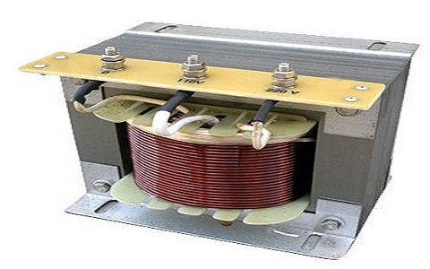

Digital Multimeter
A digital multimeter (DMM) is a versatile electronic measuring instrument used to measure several electrical quantities. It typically combines functions such as voltage measurement, current measurement, resistance measurement, and continuity testing into a single device. DMMs have a digital display that provides accurate readings, making them user-friendly and suitable for both professional and DIY applications.

Function Generator
A function generator is an electronic device that generates various types of waveforms, such as sine, square, triangle, and sawtooth waves. It allows users to generate precise electrical signals of different frequencies and amplitudes for testing and troubleshooting electronic circuits. Function generators are commonly used in laboratories, research facilities, and educational institutions.

Digital Storage Oscilloscope
A digital storage oscilloscope (DSO) is an advanced version of the traditional analog oscilloscope. It is a versatile test instrument used to visualize and analyze electrical waveforms. A DSO captures and stores the input signal in digital form, allowing users to observe and measure waveforms on a display. It provides features like waveform storage, advanced triggering, waveform analysis, and mathematical functions, making it a powerful tool for electronics troubleshooting and waveform analysis.

Power Scope
A power scope, also known as a power analyzer, is a specialized instrument used for accurate measurement and analysis of electrical power parameters. It measures quantities such as voltage, current, power factor, active power, reactive power, and harmonic content. Power scopes are commonly used in power quality analysis, energy efficiency evaluations, and power electronics testing.

AC/DC Power Supply
An AC/DC power supply is a device that converts alternating current (AC) voltage to direct current (DC) voltage. It provides a stable and regulated power source for electronic devices and circuits. AC/DC power supplies are available in various configurations and can be used in a wide range of applications, including electronic equipment testing, battery charging, and powering electronic circuits.

Auto Transformer
An auto transformer is a type of transformer that consists of a single winding with at least three taps along its length. It allows voltage transformation and voltage regulation by using a common winding section as both the primary and secondary winding. Auto transformers are used for applications where a variable output voltage is required, such as voltage regulation in electrical equipment and voltage conversion in power distribution systems.
Analog Ammeter and Voltmeter
An analog ammeter is a device used to measure electric current in a circuit. It typically has a needle or pointer that moves along a calibrated scale to indicate the current value. Analog voltmeters are used to measure voltage in a circuit and also have a pointer and calibrated scale. Both analog ammeters and voltmeters rely on mechanical movements and are being replaced by digital instruments like digital multimeters for more accurate readings. However, they are still found in some older systems and as retro-style instruments.